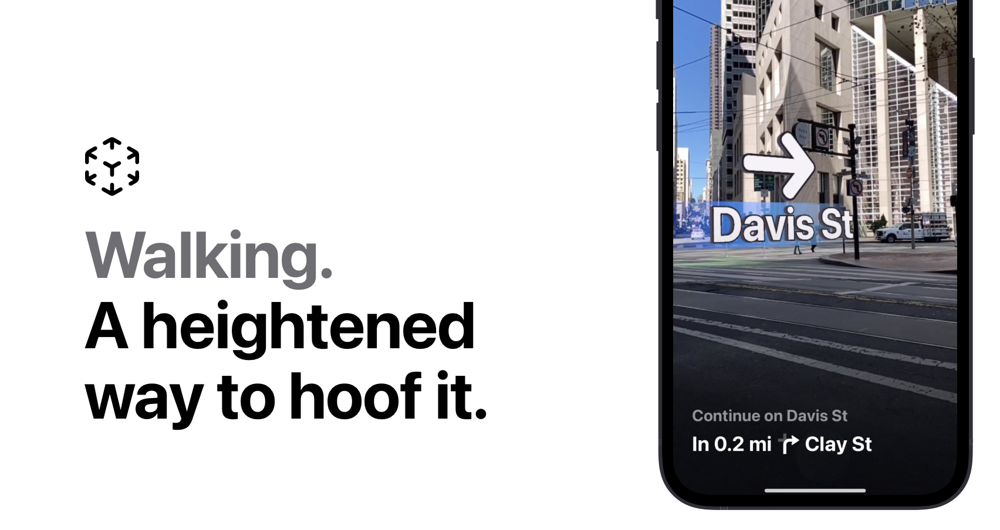

AR-Maps · Flyover
Context for a spatial prototype at Apple, distinct from the Maps features released later.


My contributionMake geospatial data
Make geospatial data
tangible.
Originated AR-Maps and led roughly 18 months of cross-team development, giving geographical coordinates a spatial representation. The prototype was not released in this form and, according to my account, provided a foundation for later AR navigation in iOS.
This page describes the project context. The Apple illustration shows the released product feature; it is not a capture of the internal prototype.